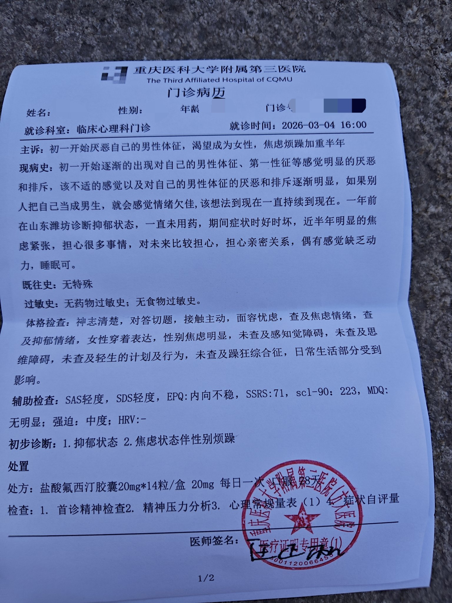

たたなこ
@tatanakots
@yyqx52000 算是小证吧，但是不太正式，不过至少也有性别烦躁
如果能开出易性症/性别不一致或许会更好

一只普普通通的♠️伪娘千香🇨🇳❤️🇯🇵
@yyqx52000
这个东西是小证吗，在任正伽这弄的，我上来就说要易性症证明（以为这个是小证），然后说不行，说要两个医生，另一个退休了，然后给我开了个这个，说是能买药
不管了，是不是的都无所谓，我又不从医院买药。 https://t.co/SHlR7nI39X